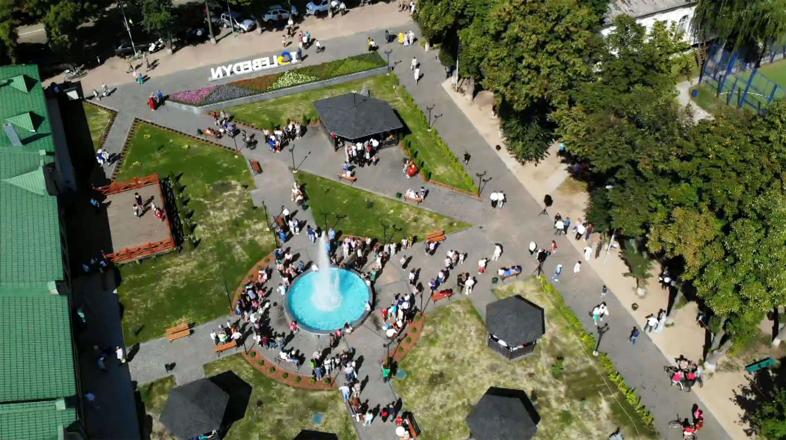
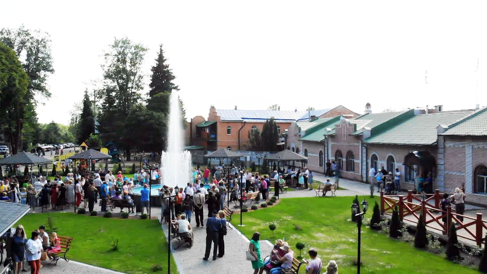
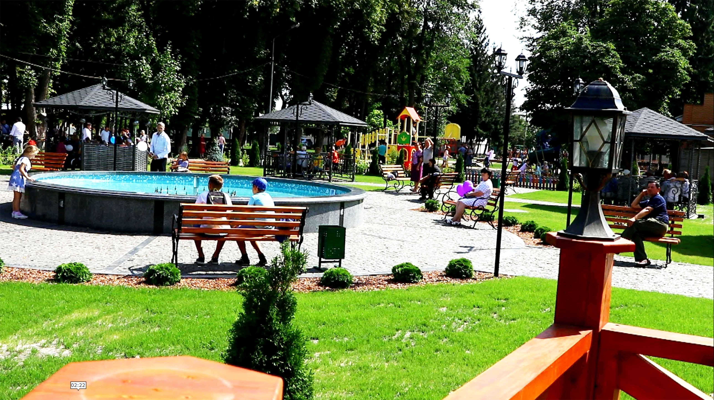
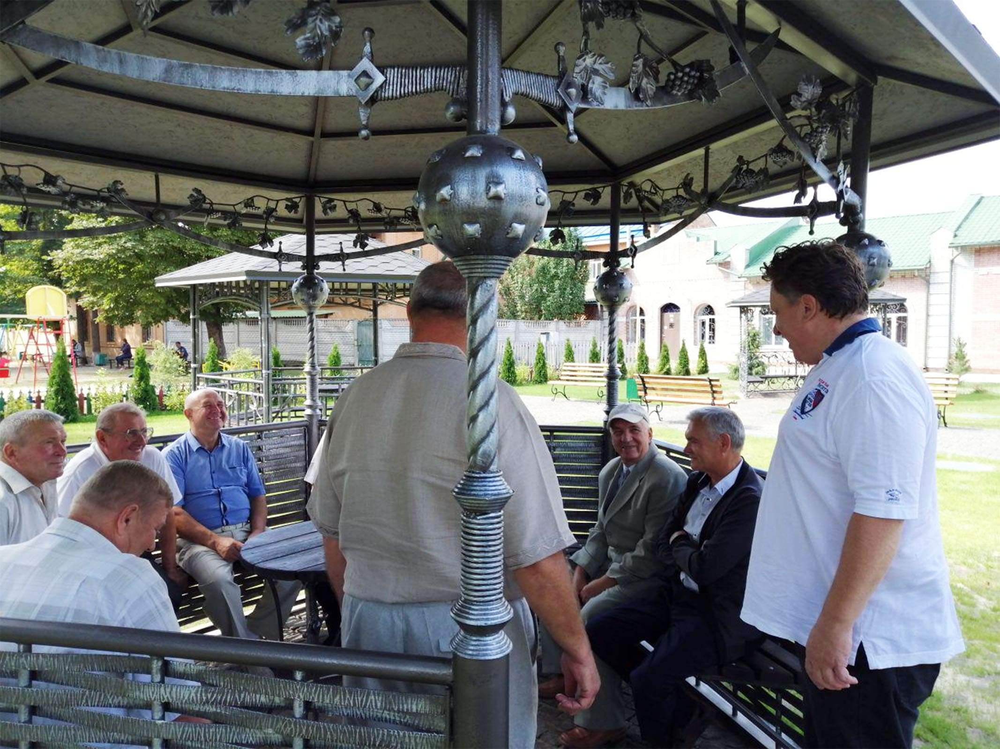
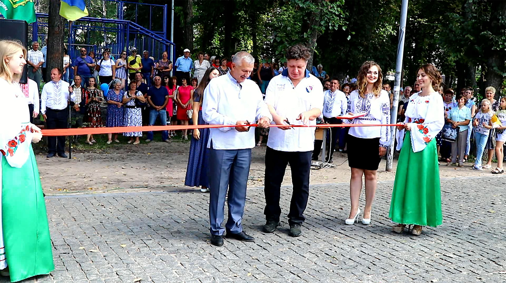
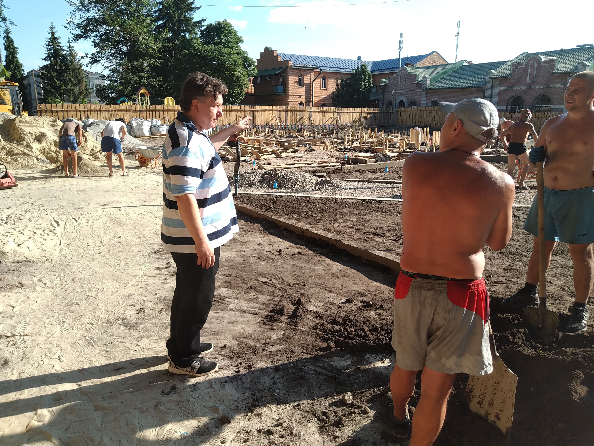
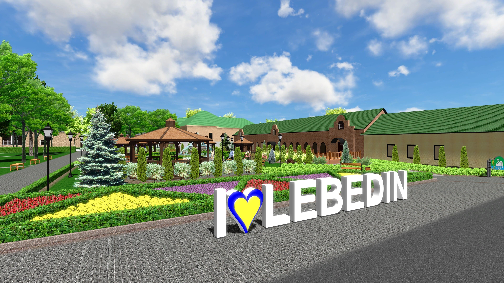
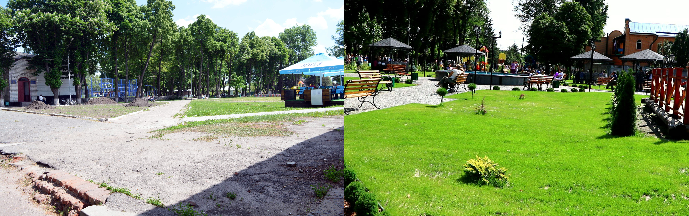

Центральний сквер в Лебедині:

Після реконструкції, сквер вважається основною
окрасою міста, з різноманітними елементами
вуличного дизайну, де кожен відвідувач буде
відчувати себе комфортно та зможе знайти свій
власний затишний куточок.

В центрі скверу - великий фонтан.

Сквер повністю і якісно відбудований,
озеленений, доріжки викладені тротуарною
бруківкою.

На території скверу, на жителів та гостей міста,
очікують п'ять унікальних альтанок з кованого
заліза.

19-го серпня 2019 р. відбулося урочисте
відкриття оновленого скверу, за участю мера
Лебедина - Олександра Бакликова.

Реконструкційні роботи проводились впродовж
року.

План реконструкції скверу, схвалений міською
радою Лебедина.

Центральний сквер міста Лебедин, до і після
реконструкції, проведеної Фондом Івана Лозового.